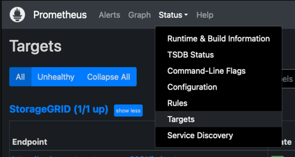
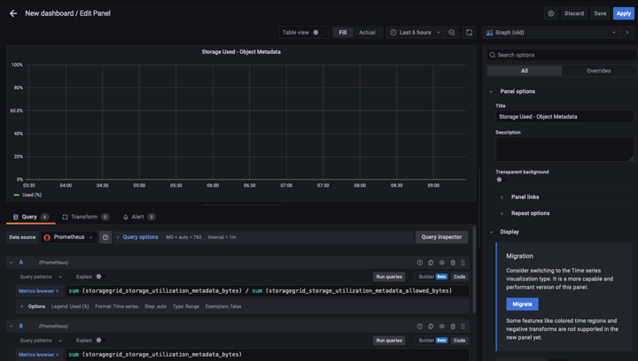

검증된 타사 솔루션
검증된 타사 솔루션
Prometheus 및 Grafana를 사용하여 메트릭 보존 기간을 연장합니다
 변경 제안
변경 제안
이 기술 보고서에서는 외부 Prometheus 및 Grafana 서비스를 사용하여 NetApp StorageGRID 11.6을 구성하는 방법에 대해 자세히 설명합니다.
소개
StorageGRID는 Prometheus를 사용하여 메트릭을 저장하고 내장된 Grafana 대시보드를 통해 이러한 메트릭의 시각화를 제공합니다. Prometheus 메트릭은 클라이언트 액세스 인증서를 구성하고 지정된 클라이언트에 대한 Prometheus 액세스를 활성화하여 StorageGRID에서 안전하게 액세스할 수 있습니다. 오늘날 이 메트릭 데이터의 보존은 관리 노드의 스토리지 용량에 의해 제한됩니다. 이러한 메트릭의 사용자 지정 시각화를 생성하는 데 더 오랜 시간이 걸릴 뿐만 아니라 사용자 지정 시각화를 만들기 위해 새 Prometheus 및 Grafana 서버를 구축하고, StorageGRID 인스턴스에서 메트릭을 스크레핑하도록 새 서버를 구성하고, 우리에게 중요한 메트릭이 포함된 대시보드를 만들 것입니다. 에서 수집된 Prometheus 메트릭에 대한 자세한 정보를 확인할 수 있습니다 "StorageGRID 설명서".
프로메테우스 연방
실습 세부 정보
이 예제에서는 StorageGRID 11.6 노드와 Debian 11 서버에 모든 가상 시스템을 사용합니다. StorageGRID 관리 인터페이스는 공개적으로 신뢰할 수 있는 CA 인증서로 구성됩니다. 이 예제에서는 StorageGRID 시스템 또는 Debian Linux 설치의 설치 및 구성을 사용하지 않습니다. Prometheus 및 Grafana에서 지원하기를 원하는 Linux의 맛을 사용할 수 있습니다. Prometheus와 Grafana는 모두 Docker 컨테이너로 설치하거나, 소스에서 구축하거나, 사전 컴파일된 바이너리로 구축할 수 있습니다. 이 예제에서는 Prometheus와 Grafana 바이너리를 동일한 Debian 서버에 직접 설치합니다. 의 기본 설치 지침을 다운로드하여 따릅니다 https://prometheus.io 및 https://grafana.com/grafana/ 각각
Prometheus 클라이언트 액세스를 위해 StorageGRID를 구성합니다
StorageGRID에 저장된 Prometheus 메트릭에 액세스하려면 개인 키가 있는 클라이언트 인증서를 생성하거나 업로드하고 클라이언트에 대한 권한을 활성화해야 합니다. StorageGRID 관리 인터페이스에는 SSL 인증서가 있어야 합니다. 이 인증서는 신뢰할 수 있는 CA에서 또는 자체 서명된 경우 수동으로 신뢰할 수 있는 Prometheus 서버에 의해 신뢰되어야 합니다. 자세한 내용은 를 참조하십시오 "StorageGRID 설명서".
-
StorageGRID 관리 인터페이스의 왼쪽 아래에서 "구성"을 선택하고 "보안" 아래의 두 번째 열에서 인증서를 클릭합니다.
-
인증서 페이지에서 "클라이언트" 탭을 선택하고 "추가" 버튼을 클릭합니다.
-
액세스 권한이 부여된 클라이언트의 이름을 제공하고 이 인증서를 사용합니다. "권한" 아래의 "Prometheus 허용" 앞의 상자를 클릭하고 계속 단추를 클릭합니다.

-
CA 서명 인증서가 있는 경우 "인증서 업로드" 라디오 버튼을 선택할 수 있지만, 여기서는 "인증서 생성" 라디오 버튼을 선택하여 StorageGRID가 클라이언트 인증서를 생성하도록 할 것입니다. 필수 필드가 입력되어 표시됩니다. 클라이언트 서버의 FQDN, 서버의 IP, 제목 및 유효한 날짜를 입력합니다. 그런 다음 "생성" 버튼을 클릭합니다.


|
Be mindful of the certificate days valid entry as you will need to renew this certificate in both StorageGRID and the Prometheus server before it expires to maintain uninterrupted collection. |
-
인증서 PEM 파일과 개인 키 PEM 파일을 다운로드합니다.

|
|
This is the only time you can download the private key, so make sure you do not skip this step. |
Prometheus 설치를 위해 Linux 서버를 준비합니다
Prometheus를 설치하기 전에 Prometheus 사용자, 디렉토리 구조를 사용하여 환경을 준비하고 메트릭 스토리지 위치의 용량을 구성하려고 합니다.
-
Prometheus 사용자를 생성합니다.
sudo useradd -M -r -s /bin/false Prometheus -
Prometheus, 클라이언트 인증서 및 메트릭 데이터용 디렉토리를 생성합니다.
sudo mkdir /etc/Prometheus /etc/Prometheus/cert /var/lib/Prometheus -
ext4 파일 시스템을 사용하여 메트릭 보존을 위해 사용 중인 디스크를 포맷했습니다.
mkfs -t ext4 /dev/sdb
-
그런 다음 Prometheus 메트릭 디렉토리에 파일 시스템을 마운트했습니다.
sudo mount -t auto /dev/sdb /var/lib/prometheus/
-
메트릭 데이터에 사용 중인 디스크의 uuid를 가져옵니다.
sudo ls -al /dev/disk/by-uuid/ lrwxrwxrwx 1 root root 9 Aug 18 17:02 9af2c5a3-bfc2-4ec1-85d9-ebab850bb4a1 -> ../../sdb
-
/etc/fstab/에 항목을 추가하면 /dev/sdb 의 uuuid 를 사용하여 재부팅 후에도 마운트가 유지됩니다.
/etc/fstab UUID=9af2c5a3-bfc2-4ec1-85d9-ebab850bb4a1 /var/lib/prometheus ext4 defaults 0 0
Prometheus를 설치하고 구성합니다
이제 서버가 준비되었으므로 Prometheus 설치를 시작하고 서비스를 구성할 수 있습니다.
-
Prometheus 설치 패키지의 압축을 풉니다
tar xzf prometheus-2.38.0.linux-amd64.tar.gz -
바이너리를 /usr/local/bin에 복사하고 소유권을 이전에 만든 Prometheus 사용자로 변경합니다
sudo cp prometheus-2.38.0.linux-amd64/{prometheus,promtool} /usr/local/bin sudo chown prometheus:prometheus /usr/local/bin/{prometheus,promtool} -
콘솔 및 라이브러리를 /etc/Prometheus에 복사합니다
sudo cp -r prometheus-2.38.0.linux-amd64/{consoles,console_libraries} /etc/prometheus/ -
StorageGRID에서 이전에 다운로드한 클라이언트 인증서 및 개인 키 PEM 파일을 /etc/Prometheus/certs로 복사합니다
-
Prometheus 구성 YAML 파일을 생성합니다
sudo nano /etc/prometheus/prometheus.yml -
다음 설정을 삽입합니다. 작업 이름은 원하는 모든 것이 될 수 있습니다. "-targets:[']"를 관리 노드의 FQDN으로 변경하고 인증서 및 개인 키 파일 이름의 이름을 변경한 경우 TLS_config 섹션이 일치하도록 업데이트하십시오. 그런 다음 파일을 저장합니다. 그리드 관리 인터페이스에서 자체 서명된 인증서를 사용하는 경우 인증서를 다운로드하여 고유한 이름의 클라이언트 인증서와 함께 놓고 TLS_config 섹션에서 ca_file:/etc/Prometheus/cert/UCERT.pem을 추가합니다
-
이 예에서는 alertmanager, cassandra, node 및 StorageGRID로 시작하는 모든 메트릭을 수집합니다. Prometheus 메트릭에 대한 자세한 내용은 에서 확인할 수 있습니다 "StorageGRID 설명서".
# my global config global: scrape_interval: 60s # Set the scrape interval to every 15 seconds. Default is every 1 minute. scrape_configs: - job_name: 'StorageGRID' honor_labels: true scheme: https metrics_path: /federate scrape_interval: 60s scrape_timeout: 30s tls_config: cert_file: /etc/prometheus/cert/certificate.pem key_file: /etc/prometheus/cert/private_key.pem params: match[]: - '{__name__=~"alertmanager_.*|cassandra_.*|node_.*|storagegrid_.*"}' static_configs: - targets: ['sgdemo-rtp.netapp.com:9091']
-
|
|
그리드 관리 인터페이스에서 자체 서명된 인증서를 사용하는 경우 인증서를 다운로드하여 고유한 이름의 클라이언트 인증서와 함께 배치합니다. TLS_config 섹션에서 클라이언트 인증서 및 개인 키 줄 위에 인증서를 추가합니다 ca_file: /etc/prometheus/cert/UIcert.pem |
-
/etc/Prometheus 및 /var/lib/Prometheus에 있는 모든 파일 및 디렉토리의 소유권을 Prometheus 사용자로 변경합니다
sudo chown -R prometheus:prometheus /etc/prometheus/ sudo chown -R prometheus:prometheus /var/lib/prometheus/ -
/etc/systemd/system에서 Prometheus 서비스 파일을 생성합니다
sudo nano /etc/systemd/system/prometheus.service -
다음 줄을 삽입하고 메트릭 데이터의 보존 기간을 1년으로 설정하는 #- storage.tsdb.retention.time=1y#를 확인합니다. 또는 #- storage.sdb.retention.size=300GiB#를 사용하여 스토리지 제한에 따라 기본 보존을 수행할 수도 있습니다. 메트릭 보존을 설정할 수 있는 유일한 위치입니다.
[Unit] Description=Prometheus Time Series Collection and Processing Server Wants=network-online.target After=network-online.target [Service] User=prometheus Group=prometheus Type=simple ExecStart=/usr/local/bin/prometheus \ --config.file /etc/prometheus/prometheus.yml \ --storage.tsdb.path /var/lib/prometheus/ \ --storage.tsdb.retention.time=1y \ --web.console.templates=/etc/prometheus/consoles \ --web.console.libraries=/etc/prometheus/console_libraries [Install] WantedBy=multi-user.target -
새 Prometheus 서비스를 등록하려면 시스템 서비스를 다시 로드하십시오. 그런 다음 Prometheus 서비스를 시작하고 활성화합니다.
sudo systemctl daemon-reload sudo systemctl start prometheus sudo systemctl enable prometheus -
서비스가 올바르게 실행되는지 확인합니다
sudo systemctl status prometheus● prometheus.service - Prometheus Time Series Collection and Processing Server Loaded: loaded (/etc/systemd/system/prometheus.service; enabled; vendor preset: enabled) Active: active (running) since Mon 2022-08-22 15:14:24 EDT; 2s ago Main PID: 6498 (prometheus) Tasks: 13 (limit: 28818) Memory: 107.7M CPU: 1.143s CGroup: /system.slice/prometheus.service └─6498 /usr/local/bin/prometheus --config.file /etc/prometheus/prometheus.yml --storage.tsdb.path /var/lib/prometheus/ --web.console.templates=/etc/prometheus/consoles --web.con> Aug 22 15:14:24 aj-deb-prom01 prometheus[6498]: ts=2022-08-22T19:14:24.510Z caller=head.go:544 level=info component=tsdb msg="Replaying WAL, this may take a while" Aug 22 15:14:24 aj-deb-prom01 prometheus[6498]: ts=2022-08-22T19:14:24.816Z caller=head.go:615 level=info component=tsdb msg="WAL segment loaded" segment=0 maxSegment=1 Aug 22 15:14:24 aj-deb-prom01 prometheus[6498]: ts=2022-08-22T19:14:24.816Z caller=head.go:615 level=info component=tsdb msg="WAL segment loaded" segment=1 maxSegment=1 Aug 22 15:14:24 aj-deb-prom01 prometheus[6498]: ts=2022-08-22T19:14:24.816Z caller=head.go:621 level=info component=tsdb msg="WAL replay completed" checkpoint_replay_duration=55.57µs wal_rep> Aug 22 15:14:24 aj-deb-prom01 prometheus[6498]: ts=2022-08-22T19:14:24.831Z caller=main.go:997 level=info fs_type=EXT4_SUPER_MAGIC Aug 22 15:14:24 aj-deb-prom01 prometheus[6498]: ts=2022-08-22T19:14:24.831Z caller=main.go:1000 level=info msg="TSDB started" Aug 22 15:14:24 aj-deb-prom01 prometheus[6498]: ts=2022-08-22T19:14:24.831Z caller=main.go:1181 level=info msg="Loading configuration file" filename=/etc/prometheus/prometheus.yml Aug 22 15:14:24 aj-deb-prom01 prometheus[6498]: ts=2022-08-22T19:14:24.832Z caller=main.go:1218 level=info msg="Completed loading of configuration file" filename=/etc/prometheus/prometheus.y> Aug 22 15:14:24 aj-deb-prom01 prometheus[6498]: ts=2022-08-22T19:14:24.832Z caller=main.go:961 level=info msg="Server is ready to receive web requests." Aug 22 15:14:24 aj-deb-prom01 prometheus[6498]: ts=2022-08-22T19:14:24.832Z caller=manager.go:941 level=info component="rule manager" msg="Starting rule manager..." -
이제 Prometheus 서버의 UI로 이동할 수 있습니다 http://Prometheus-server:9090 UI를 참조하십시오

-
"상태" 대상 아래에서 Prometheus.yml에서 구성한 StorageGRID 끝점의 상태를 볼 수 있습니다


-
그래프 페이지에서 테스트 쿼리를 실행하고 데이터가 스크레핑되었는지 확인할 수 있습니다. 예를 들어 쿼리 표시줄에 "StorageGrid_node_cpu_Utilization_percentage"를 입력하고 실행 단추를 클릭합니다.

Grafana 설치 및 구성
Prometheus가 설치되고 작동되었으므로 Grafana 설치 및 대시보드 구성으로 이동할 수 있습니다
Grafana 인스턴션
-
Grafana의 최신 Enterprise Edition을 설치합니다
sudo apt-get install -y apt-transport-https sudo apt-get install -y software-properties-common wget sudo wget -q -O /usr/share/keyrings/grafana.key https://packages.grafana.com/gpg.key -
안정적인 릴리스를 위해 이 리포지토리를 추가합니다.
echo "deb [signed-by=/usr/share/keyrings/grafana.key] https://packages.grafana.com/enterprise/deb stable main" | sudo tee -a /etc/apt/sources.list.d/grafana.list -
리포지토리를 추가한 후
sudo apt-get update sudo apt-get install grafana-enterprise -
새 이식편 서비스를 등록하려면 시스템 서비스를 다시 로드하십시오. 그런 다음 Grafana 서비스를 시작 및 활성화합니다.
sudo systemctl daemon-reload sudo systemctl start grafana-server sudo systemctl enable grafana-server.service -
Grafana가 이제 설치 및 실행 중입니다. 브라우저를 열고 HTTP://Prometheus-server:3000을 열면 Grafana 로그인 페이지가 표시됩니다.
-
기본 로그인 자격 증명은 admin/admin이며, 메시지가 표시되면 새 암호를 설정해야 합니다.
StorageGRID에 대한 Grafana 대시보드를 생성합니다
Grafana와 Prometheus가 설치 및 실행되었으므로 이제 데이터 소스를 생성하고 대시보드를 구축하여 두 가지를 연결할 시간입니다
-
왼쪽 창에서 "구성"을 확장하고 "데이터 소스"를 선택한 다음 "데이터 소스 추가" 버튼을 클릭합니다
-
Prometheus는 최고의 데이터 소스 중 하나가 될 것입니다. 그렇지 않은 경우 검색 표시줄을 사용하여 "Prometheus"를 찾습니다.
-
Prometheus 인스턴스의 URL과 Prometheus 간격에 맞게 스크레핑 간격을 입력하여 Prometheus 소스를 구성합니다. Prometheus에서 경고 관리자를 구성하지 않았기 때문에 알림 섹션도 비활성화했습니다.

-
원하는 설정을 입력한 후 아래로 스크롤하여 "Save & Test(저장 및 테스트)"를 클릭합니다.
-
구성 테스트가 완료되면 탐색 버튼을 클릭합니다.
-
탐색 창에서 Prometheus를 "StorageGrid_node_cpu_Utilization_percentage"로 테스트한 것과 동일한 메트릭을 사용하고 "쿼리 실행" 단추를 클릭할 수 있습니다

-
-
이제 데이터 소스가 구성되었으므로 대시보드를 생성할 수 있습니다.
-
왼쪽 창에서 "대시보드"를 확장하고 "+새 대시보드"를 선택합니다.
-
"Add a new panel(새 패널 추가)"을 선택합니다.
-
메트릭을 선택하여 새 패널을 구성합니다. 다시 "StorageGrid_node_cpu_Utilization_percentage"를 사용하고, 패널 제목을 입력하고, 하단에 있는 "Options"를 확장하고, 범례를 사용자 지정으로 변경하려면 "{{instance}"를 입력하고, 오른쪽 창에 "Standard options"에서 "Unit"을 "Misc/Percent(0-100)"로 설정합니다. 그런 다음 "적용"을 클릭하여 패널을 대시보드에 저장합니다.

-
-
원하는 각 메트릭에 대해 이러한 대시보드를 계속 구축할 수 있지만 다행히 StorageGRID에는 사용자 지정 대시보드에 복사할 수 있는 패널이 포함된 대시보드가 이미 있습니다.
-
StorageGRID 관리 인터페이스의 왼쪽 창에서 "지원"을 선택하고 "도구" 열 아래쪽에서 "메트릭"을 클릭합니다.
-
메트릭스 내에서 중간 열의 맨 위에 있는 "Grid" 링크를 선택하겠습니다.

-
Grid 대시보드에서 "Storage Used - Object Metadata" 패널을 선택합니다. 작은 아래쪽 화살표 및 패널 제목 끝을 클릭하여 메뉴를 드롭다운합니다. 이 메뉴에서 "검사" 및 "패널 JSON"을 선택합니다.

-
JSON 코드를 복사하고 창을 닫습니다.

-
새 대시보드에서 아이콘을 클릭하여 새 패널을 추가합니다.

-
변경하지 않고 새 패널을 적용합니다
-
StorageGRID 패널과 마찬가지로 JSON을 검사하십시오. JSON 코드를 모두 제거하고 StorageGRID 패널에서 복사한 코드로 교체합니다.

-
새 패널을 편집하면 오른쪽에 "migrate(마이그레이션)" 버튼이 있는 Migration(마이그레이션) 메시지가 표시됩니다. 버튼을 클릭한 다음 "적용" 버튼을 클릭합니다.


-
-
모든 패널이 제자리에 있고 원하는 대로 구성되면 오른쪽 위에 있는 디스크 아이콘을 클릭하여 대시보드를 저장하고 대시보드에 이름을 지정합니다.
결론
이제 Prometheus 서버에 맞춤형 데이터 보존 및 스토리지 용량을 추가할 수 있습니다. 이를 통해 운영 관련 메트릭이 포함된 자체 대시보드를 지속적으로 구축할 수 있습니다. 에서 수집된 Prometheus 메트릭에 대한 자세한 정보를 확인할 수 있습니다 "StorageGRID 설명서".
_ 아론 클라인 _